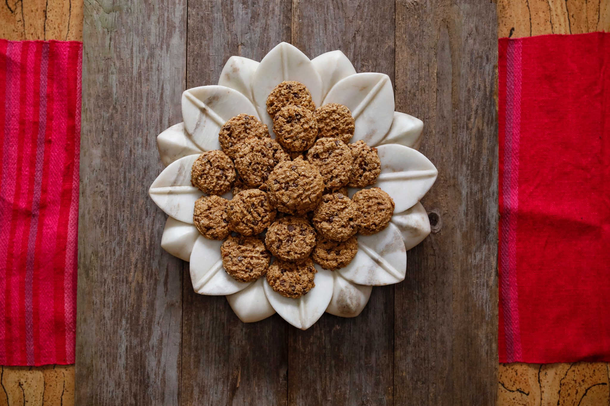

Many things about motherhood are surprising. Having a “sensory” or “high-octane” child with additional and specific needs only adds to the already heavy layers of daily life.
I had to get creative with our food. I’ve always been a problem solver, so I figured out a way to make helpful foods that he would love, without problem ingredients like gluten and refined sugars.
This is a collection of recipes created out of love for my family and those who join my table — some of whom have food sensitivities, some have severe allergies.